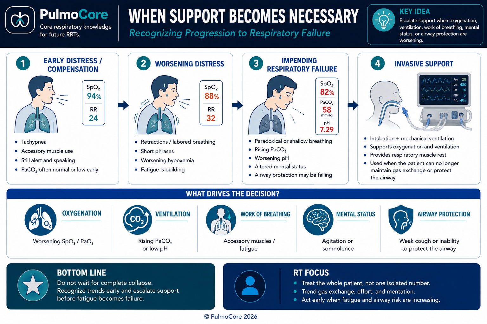
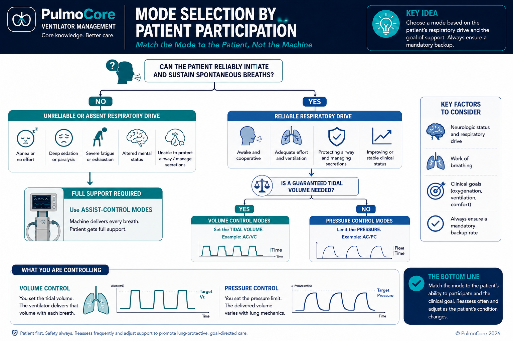
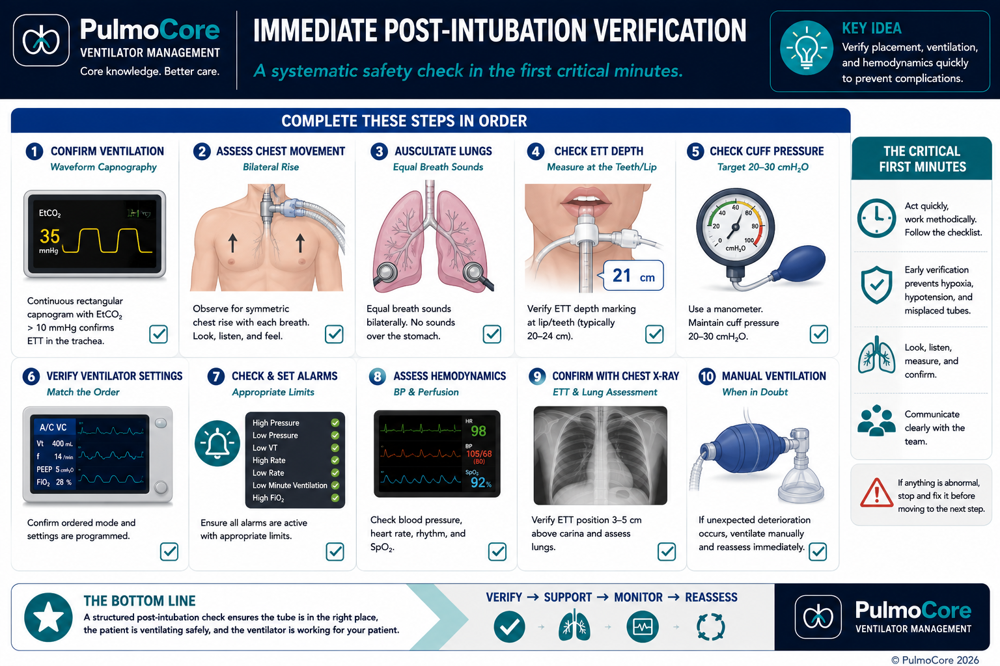

Move from bedside assessment to a safe, complete initial ventilator plan. You will learn how to recognize support failure, decide between NIV and intubation, select a mode, calculate predicted body weight, choose initial settings, and reassess the patient after ventilation begins.
Primary decision What support does this patient need now?
Estimated time 60–80 minutes
Level Board review · Clinical application
Learning Objectives
By the end of this lesson, you should be able to:
1. Recognize failure Use assessment findings, trends, and ABGs to identify when support must escalate.
2. Choose the interface Decide whether NIV is appropriate or whether the airway must be secured.
4. Reassess and modify Evaluate the patient and ABG after initiation and choose the safest first adjustment.
Clinical Entry Case
You Are the ICU Respiratory Therapist
A 68-year-old man with severe COPD arrives in the emergency department after three days of worsening dyspnea. He is already receiving aggressive medical therapy. The question is no longer simply, “What oxygen device should we try?” The question is whether his respiratory system can continue the work of breathing safely.
RR 36/min
SpO₂ 86% on NIV
Mental status Drowsier than 20 min ago
ABG 7.21 / 78 / 55 / 31
Breath sounds Very diminished
Effort Severe accessory use
The physician asks, “Should we intubate now?”
Do not answer from one number
Use the whole pattern:
gas exchange
work of breathing
mental status
airway protection
response to treatment
trajectory over time
Clinical reasoning starts with trajectory
A single abnormal ABG may be treatable. A worsening ABG combined with fatigue, deteriorating mental status, and failure of NIV tells you the patient is losing the ability to compensate. Board questions often hide the decision in the trend, not in one isolated value.
1. Recognizing the Need for Mechanical Ventilation
Mechanical ventilation is supportive therapy. It does not cure pneumonia, reverse bronchospasm, remove pulmonary edema, or repair neuromuscular weakness. It temporarily supports oxygenation, carbon dioxide removal, airway protection, and respiratory muscle rest while the underlying problem is treated.
The four major reasons to ventilate
Oxygenation failure Hypoxemia persists despite an appropriate oxygen strategy.
Ventilatory failure Alveolar ventilation is inadequate and PaCO₂ rises with acidemia.
Excessive work of breathing The patient cannot sustain the effort required to breathe.
Airway protection The patient cannot maintain patency or protect against aspiration.
The decision is clinical. No universal PaO₂, PaCO₂, pH, respiratory rate, or vital capacity automatically requires intubation in every patient. Instead, ask whether the patient is maintaining gas exchange and airway protection with a sustainable level of effort.

Figure purpose: Summarizes the progression from compensation to decompensation and why intubation decisions depend on the whole clinical picture.
What the NBRC wants you to notice
When a stem includes worsening mental status, decreasing respiratory effort after prolonged distress, rising PaCO₂, or failure of the current support, the test is often asking whether compensation has failed—not whether you can identify one abnormal number.
Decision Checkpoint: Has Support Failed?
A patient with pneumonia is on HFNC at 60 L/min and FiO₂ 1.00. Over 30 minutes, SpO₂ falls from 91% to 84%, RR rises from 30 to 38/min, the patient becomes confused, and an ABG shows 7.31 / 48 / 49 / 24. What is the best next recommendation?
2. NIV or Invasive Ventilation?
NIV can reduce work of breathing, improve alveolar ventilation, recruit alveoli, and sometimes prevent intubation. But it only works when the patient can cooperate, protect the airway, manage secretions, and improve promptly.
NIV is reasonable when
the patient is awake and cooperative
the airway is protected
secretions are manageable
hemodynamics are reasonably stable
the condition is likely to respond
close reassessment is available
Intubation is favored when
airway protection is unreliable
mental status is worsening
vomiting or copious secretions increase aspiration risk
facial trauma prevents a seal
severe instability or arrest is present
NIV is failing despite optimization
NIV is a trial, not a delay tactic
When NIV is selected, define what improvement should occur and how quickly. Better mental status, lower respiratory rate, reduced effort, improved pH, and improved oxygenation support continuation. Failure to improve should prompt escalation before the patient crashes.
Decision Checkpoint: NIV or Intubation?
A patient with acute cardiogenic pulmonary edema is alert, anxious, hypertensive, producing pink frothy sputum, and has SpO₂ 86% on a nonrebreather. The patient follows commands and has no vomiting. What is the best immediate ventilatory strategy?
3. Choosing the Initial Ventilator Mode
A mode is a pattern of breath delivery. For initial stabilization, the key question is whether the patient needs full support with guaranteed mandatory breaths or can participate safely in spontaneous breathing.
A practical starting framework
Mode strategy
What is controlled
What varies
Clinical use
Volume assist-control
VT and minimum rate
Pressure
Common initial mode when reliable minute ventilation is needed.
Pressure assist-control
Inspiratory pressure and minimum rate
VT
Useful when limiting pressure or controlling inspiratory flow pattern is desirable.
Pressure-regulated volume-targeted mode
Target VT with adaptive pressure
Breath-to-breath pressure
Can combine a volume target with pressure-limited delivery; monitor actual pressure and VT.
Spontaneous/pressure support
Support pressure
Rate and VT
Appropriate only when the patient has a reliable drive and can sustain breathing.
Common mistake
Do not choose a spontaneous-only mode for an apneic, deeply sedated, severely fatigued, or unreliable patient. The mode must match the patient’s ability to initiate and sustain breaths.

Figure purpose: Connects mode selection to patient drive, support needs, and the controlled variable rather than memorized brand names.
4. Predicted Body Weight and Lung-Protective Tidal Volume
Lung size follows height and sex—not total body mass. Therefore, tidal volume is selected from predicted body weight (PBW), sometimes called ideal body weight in older resources, rather than actual weight.
Male PBW: 50 + 2.3 × inches over 60 Female PBW: 45.5 + 2.3 × inches over 60
A common initial range for adults without severe ARDS is approximately 6–8 mL/kg PBW. For ARDS or when lung-protective ventilation is needed, begin near 6 mL/kg PBW and adjust based on plateau pressure, driving pressure, gas exchange, and clinical goals.
Why actual weight is unsafe
An obese patient does not have proportionally larger lungs. Choosing VT from actual weight can overdistend alveoli and increase ventilator-induced lung injury. A short patient may need a VT that looks “small” compared with traditional 500–600 mL settings.
Worked example
Calculation
VT range
Female, 64 in (162.6 cm)
45.5 + 2.3 × 4 = 54.7 kg
6 mL/kg ≈ 328 mL; 8 mL/kg ≈ 438 mL
Male, 70 in (177.8 cm)
50 + 2.3 × 10 = 73 kg
6 mL/kg ≈ 438 mL; 8 mL/kg ≈ 584 mL
Calculation Practice
A 5 ft 4 in female with pneumonia weighs 118 kg. She is intubated for worsening respiratory failure. Calculate PBW, then choose the best initial VT from the options.
5. Selecting the Complete Initial Settings
A safe ventilator order is more than a mode and tidal volume. You must establish a complete starting plan, then immediately verify that the patient receives the intended support.
Setting
Clinical question
Typical initial reasoning
Mode
How much support and what variable must be guaranteed?
Assist-control is common for full initial support.
VT or pressure
How will ventilation be delivered safely?
Use PBW for VT; if pressure control, monitor resulting VT.
Rate
What minute ventilation is needed?
Often 12–20/min, individualized to disease, pH, and time constants.
FiO₂
How urgently must oxygenation be stabilized?
Use a high initial FiO₂ after emergency intubation, then titrate promptly to target saturation.
PEEP
How much end-expiratory pressure is needed to prevent collapse and improve oxygenation?
Often 5 cm H₂O initially; more may be needed for recruitable hypoxemia.
Flow / inspiratory time
Does the patient need a short or longer inspiratory time?
Higher flow and shorter inspiratory time help obstructive patients exhale.
Trigger
Can the patient trigger without excessive effort or auto-triggering?
Set sensitive enough for comfort but not so sensitive that noise triggers breaths.
Alarms
What deviation would signal danger?
Individualize high pressure, low VT/minute ventilation, apnea, and FiO₂ alarms.
What the NBRC wants you to do
Look for the setting that directly targets the identified problem. PaCO₂ and pH are primarily addressed through minute ventilation. Oxygenation is primarily addressed through FiO₂ and PEEP. Do not change several settings at once unless the patient is unstable and multiple immediate corrections are necessary.
Guided Case: Build the Initial Order
A 70-inch male with septic shock and bilateral infiltrates is intubated. PBW is 73 kg. He has severe hypoxemia and suspected early ARDS. Which initial order is best?
6. Disease-Specific Starting Strategies
The same basic ventilator variables are used across diseases, but priorities differ. Initial settings should anticipate the physiology most likely to cause harm.
Pattern
Primary risk
Initial strategy
COPD / asthma
Air trapping and auto-PEEP
Lower rate, adequate VT, high inspiratory flow, short inspiratory time, long expiratory time; accept permissive hypercapnia when appropriate.
ARDS / diffuse alveolar disease
Overdistention and cyclic collapse
VT near 6 mL/kg PBW, monitor plateau pressure, use sufficient PEEP, titrate FiO₂, consider prone positioning later if indicated.
Neuromuscular weakness
Inadequate ventilation and cough
Provide reliable minute ventilation, assess secretion clearance, and anticipate prolonged support if weakness persists.
Closed head injury
Secondary brain injury from hypoxemia or extreme PaCO₂
Maintain oxygenation and generally target normocapnia unless a temporary emergency strategy is ordered.
Cardiogenic pulmonary edema
Alveolar flooding and high cardiac workload
NIV may prevent intubation; if invasive support is needed, PEEP can improve recruitment and reduce preload/afterload while hemodynamics are monitored.
Match the Pattern to the Priority
Select the best initial priority for each condition.
Status asthmaticus
ARDS
Guillain-Barré syndrome
Complete all three matches.
7. Immediate Post-Intubation Safety Check
Placing the patient on the ventilator is not the end of initiation. The first minutes are a high-risk period. Verify the airway, equipment, settings, alarms, and patient response before leaving the bedside.
Confirm tube with waveform capnography→Assess bilateral chest movement and breath sounds→Check tube depth and cuff pressure→Verify delivered VT and pressures→Set alarms→Reassess hemodynamics
Disconnect and ventilate manually when necessary
If a newly ventilated patient suddenly deteriorates and you cannot immediately determine whether the problem is the patient, airway, circuit, or ventilator, remove the patient from the ventilator and provide manual ventilation with 100% oxygen while assessing. This quickly separates ventilator/circuit problems from patient/airway problems.

Figure purpose: Provides a visual checklist for the high-risk first minutes after intubation and ventilator connection.
8. Reassess After Initiation
Mechanical ventilation is a treatment trial that begins the moment settings are selected. Reassess the patient immediately and obtain an ABG after enough time has passed for the new ventilation strategy to influence gas exchange—commonly around 20–30 minutes in a stable patient, sooner when deterioration is occurring.
Reassessment sequence
Look at the patient: effort, synchrony, chest movement, mental status, perfusion.
Check the airway: position, patency, secretions, cuff.
Check the ventilator: delivered VT, total rate, minute ventilation, pressures, alarms, graphics.
Evaluate ventilation: pH, PaCO₂, exhaled CO₂, total minute ventilation.
Change one primary variable when possible: then reassess again.
ABG adjustment logic
For respiratory acidosis caused by inadequate minute ventilation, increase effective minute ventilation—usually by increasing rate first when VT is already lung protective. For respiratory alkalosis, reduce minute ventilation. For hypoxemia, adjust FiO₂ and/or PEEP according to severity, recruitability, and hemodynamic tolerance.
Thirty-Minute Reassessment
A 70-inch male with ARDS is on VC-AC: VT 440 mL, rate 16/min, FiO₂ 0.80, PEEP 10. Plateau pressure is 27 cm H₂O. ABG: 7.24 / 58 / 68 / 24. SpO₂ is 91%. Which single change best addresses the acidemia while preserving lung protection?
Lesson Challenge
Independent Case: The Deteriorating COPD Patient
Return to the patient from the beginning. NIV has failed. He is now difficult to arouse, cannot clear secretions, and has an ABG of 7.18 / 88 / 50 / 32. He is 68 inches tall.
Primary problem Acute-on-chronic ventilatory failure
Airway Protection unreliable
Physiology Severe obstruction and air trapping risk
Decision 1: Support strategy
What should be recommended now?
Decision 2: Initial strategy
Which ventilator strategy best anticipates COPD physiology?
0 / 2 decisions completed
Knowledge Check
Board-Style Integration
Answer each question correctly. Incorrect feedback explains the clinical clue you should reconsider.
Question 1
Which finding most strongly indicates that a trial of NIV should be stopped?
Question 2
Why is PBW used to select VT?
Question 3
An intubated patient has a lung-protective VT and persistent respiratory acidosis. Plateau pressure is acceptable. What is usually the safest first ventilator adjustment?
Question 4
Which initial change best reduces air trapping in status asthmaticus?
0 / 4 questions answered correctly
Summary & Clinical Pearls
Initiating mechanical ventilation is a sequence of clinical decisions, not a memorized set of numbers.
Assess the whole patient Use trajectory, effort, gas exchange, mental status, and airway protection.
Match support to physiology NIV requires cooperation and airway protection; invasive support is needed when those fail.
Protect the lung Use PBW for VT and adapt settings to obstructive, restrictive, neurologic, or cardiac physiology.
Reassess every intervention Verify airway, settings, alarms, hemodynamics, pressures, and ABG response.
One-minute board strategy
Ask three questions in order: What is failing? oxygenation, ventilation, work of breathing, or airway protection. What intervention directly targets that failure? NIV, intubation, a mode, or a setting. What new risk does the intervention create? air trapping, overdistention, hypotension, or delayed escalation.
Ventilator Initiation Flashcards
Use these cards for rapid review before a second board attempt.